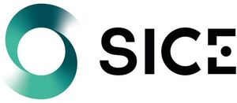

Trade Mark Journal No.2025/032 8 August 2025
WO0000001865724 (9,35,37,38,42)
Office of origin: European Union Intellectual Property Office (EUIPO)
Date of International Registration:19 May 2025
Date of designation in the UK:
19 May 2025

The mark contains the colours green, white and black.
- Class 9
- Photographic apparatus and instruments; cinematographic apparatus and machines; optical apparatus and instruments; weighing apparatus and instruments; nautical apparatus and instruments; surveying apparatus and instruments; measuring apparatus and instruments; apparatus and instruments for verification (supervision); signaling apparatus and instruments; life-saving apparatus and instruments; apparatus and instruments for controlling electric current; apparatus and instruments for accumulating electricity; apparatus and instruments for switching electricity; apparatus and instruments for accumulating electricity; apparatus and instruments for regulating electricity; apparatus and instruments for conducting electricity; sound transmission apparatus; image transmitting apparatus; apparatus for reproducing images; sound reproduction apparatus; apparatus for recording images; sound recording apparatus; magnetic recording media, sound recording disks; mechanisms for coin-operated apparatus; computers; computer peripherals; downloadable publications; security and surveillance apparatus; electric and electronic security apparatus and instruments; electric alarms.
- Class 35
- Advertising; commercial business management; commercial administration; retail services for machine tools; retail services for photographic apparatus and instruments; retail services for cinematographic machines and apparatus; retail services for optical apparatus and instruments; retail services for weighing apparatus and instruments; retail services for nautical apparatus and instruments; retail services for surveying apparatus and instruments; retail services for measuring instruments and apparatus; retail services for verification (supervision) apparatus and instruments; retail services for signaling apparatus and instruments; retail services for life-saving apparatus and instruments; retail services for apparatus and instruments for controlling electric current; retail services for apparatus and instruments for accumulating electricity; retail services for apparatus and instruments for switching electricity; retail services for apparatus and instruments for accumulating electricity; retail services for apparatus and instruments for regulating electricity; retail services for apparatus and instruments for conducting electricity; retail services for apparatus for transmission of sound; retail services for apparatus for transmission of images; retail services for apparatus for reproduction of images; retail services for apparatus for reproduction of sound; retail services for apparatus for recording images; retail services for apparatus for recording of sound; retail services for magnetic data carriers, recording discs; retail services for mechanisms for coin-operated apparatus; retail services for computers; retail services for computer peripherals; retail services for downloadable publications; retail services for ventilation apparatus; retail services for cooking apparatus and installations; retail services for water supply installations; retail services for heating apparatus; retail services for drying apparatus; retail services for sanitary apparatus and installations; retail services for refrigerating apparatus; retail services for steam generating apparatus; retail services for lighting apparatus; wholesale services for machine tools; wholesale services for photographic apparatus and instruments; wholesale services for cinematographic machines and apparatus; wholesale services for optical apparatus and instruments; wholesale services for weighing apparatus and instruments; wholesale services for nautical apparatus and instruments; wholesale services for surveying apparatus and instruments; wholesale services for measuring instruments and apparatus; wholesale services for verification (supervision) apparatus and instruments; wholesale services for signaling apparatus and instruments; wholesale services for life-saving apparatus and instruments; wholesale services for apparatus and instruments for controlling electric current; wholesale services for apparatus and instruments for accumulating electricity; wholesale services for apparatus and instruments for switching electricity; wholesale services for apparatus and instruments for accumulating electricity; wholesale services for apparatus and instruments for regulating electricity; wholesale services for apparatus and instruments for conducting electricity; wholesale services for apparatus for transmission of sound; wholesale services for apparatus for transmission of images; wholesale services for apparatus for reproduction of images; wholesale services for apparatus for reproduction of sound; wholesale services for apparatus for recording images; wholesale services for apparatus for recording of sound; wholesale services for magnetic data carriers, recording discs; wholesale services for mechanisms for coin-operated apparatus; wholesale services for computers; wholesale services for computer peripherals; wholesale services for downloadable publications; wholesale services for ventilation apparatus; wholesale services for cooking apparatus and installations; wholesale services for water supply installations; wholesale services for heating apparatus; wholesale services for drying apparatus; wholesale services for sanitary apparatus and installations; wholesale services for refrigerating apparatus; wholesale services for steam generating apparatus; wholesale services for lighting apparatus; online retail services for machine tools; online retail services for photographic apparatus and instruments; online retail services for cinematographic machines and apparatus; online retail services for optical apparatus and instruments; online retail services for weighing apparatus and instruments; online retail services for nautical apparatus and instruments; online retail services for surveying apparatus and instruments; online retail services for measuring instruments and apparatus; online retail services for verification (supervision) apparatus and instruments; online retail services for signaling apparatus and instruments; online retail services for life-saving apparatus and instruments; online retail services for apparatus and instruments for controlling electric current; online retail services for apparatus and instruments for accumulating electricity; online retail services for apparatus and instruments for switching electricity; online retail services for apparatus and instruments for accumulating electricity; online retail services for apparatus and instruments for regulating electricity; online retail services for apparatus and instruments for conducting electricity; online retail services for apparatus for transmission of sound; online retail services for apparatus for transmission of images; online retail services for apparatus for reproduction of images; online retail services for apparatus for reproduction of sound; online retail services for apparatus for recording images; online retail services for apparatus for recording of sound; online retail services for magnetic data carriers, recording discs; online retail services for mechanisms for coin-operated apparatus; online retail services for computers; online retail services for computer peripherals; online retail services for downloadable publications; online retail services for ventilation apparatus; online retail services for cooking apparatus and installations; online retail services for water supply installations; online retail services for heating apparatus; online retail services for drying apparatus; online retail services for sanitary apparatus and installations; online retail services for refrigerating apparatus; online retail services for steam generating apparatus; online retail services for lighting apparatus; retail services for security and monitoring apparatus; retail services for electric and electronic security apparatus and instruments; retail services for electric alarms; wholesale services for security and monitoring apparatus; wholesale services for electric and electronic security apparatus and instruments; wholesale services for electric alarms; online retail services for security and monitoring apparatus; online retail services for electric and electronic security apparatus and instruments; online retail services for electric alarms.
- Class 37
- Construction services; installation services for machine tools; installation services for photographic apparatus and instruments; installation services for cinematographic machines and apparatus; installation services for optical apparatus and instruments; installation services for weighing apparatus and instruments; installation services for nautical apparatus and instruments; installation services for surveying apparatus and instruments; installation services for measuring instruments and apparatus; installation services for checking (supervision) apparatus and instruments; installation services for signaling apparatus and instruments; installation services for life-saving apparatus and instruments; installation services for apparatus and instruments for controlling electric current; installation services for apparatus and instruments for accumulating electricity; installation services for apparatus and instruments for switching electricity; installation services for apparatus and instruments for accumulating electricity; installation services for apparatus and instruments for regulating electricity; installation services for apparatus and instruments for conducting electricity; installation services for sound transmitting apparatus; installation services for apparatus for the transmission of images; installation services for apparatus for the reproduction of images; installation services for sound reproduction apparatus; installation services for apparatus for recording images; installation services for sound recording apparatus; installation services for magnetic data carriers, recording discs; installation services for mechanisms for coin-operated apparatus; installation services for computers; installation services for computer peripherals; installation services for ventilation apparatus; installation services for cooking apparatus and installations; installation services for water supply installations; installation services for heaters; installation services for drying apparatus; installation services for sanitary apparatus and installations; installation services for refrigerating apparatus; installation services for steam generating apparatus; installation services for lighting apparatus; repairs and maintenance work for machine tools; repairs and maintenance work for photographic apparatus and instruments; repairs and maintenance work for cinematographic machines and apparatus; repairs and maintenance work for optical apparatus and instruments; repairs and maintenance work for weighing apparatus and instruments; repairs and maintenance work for nautical apparatus and instruments; repairs and maintenance work for surveying apparatus and instruments; repairs and maintenance work for measuring instruments and apparatus; repairs and maintenance work for checking (supervision) apparatus and instruments; repairs and maintenance work for signaling apparatus and instruments; repairs and maintenance work for life-saving apparatus and instruments; repairs and maintenance work for apparatus and instruments for controlling electric current; repairs and maintenance work for apparatus and instruments for accumulating electricity; repairs and maintenance work for apparatus and instruments for switching electricity; repairs and maintenance work for apparatus and instruments for accumulating electricity; repairs and maintenance work for apparatus and instruments for regulating electricity; repairs and maintenance work for apparatus and instruments for conducting electricity; repairs and maintenance work for sound transmitting apparatus; repairs and maintenance work for apparatus for the transmission of images; repairs and maintenance work for apparatus for the reproduction of images; repairs and maintenance work for sound reproduction apparatus; repairs and maintenance work for apparatus for recording images; repairs and maintenance work for sound recording apparatus; repairs and maintenance work for magnetic data carriers, recording discs; repairs and maintenance work for mechanisms for coin-operated apparatus; repairs and maintenance work for computers; repairs and maintenance work for computer peripherals; repairs and maintenance work for ventilation apparatus; repairs and maintenance work for cooking apparatus and installations; repairs and maintenance work for water supply installations; repairs and maintenance work for heaters; repairs and maintenance work for drying apparatus; repairs and maintenance work for sanitary apparatus and installations; repairs and maintenance work for refrigerating apparatus; repairs and maintenance work for steam generating apparatus; repairs and maintenance work for lighting apparatus; installation services for security and monitoring apparatus; installation services for electric and electronic security apparatus and instruments; installation services for electric alarms; repairs and maintenance work for security and monitoring apparatus; repairs and maintenance work for electric and electronic security apparatus and instruments; repairs and maintenance work for electric alarms.
- Class 38
- Telecommunications.
- Class 42
- Scientific and technological services; technological research; scientific services and design relating thereto; technological services and design related to the above; scientific research; industrial analysis services; industrial research; quality control and authentication services; software design; engineering (engineering work); preparation of technical reports; technical studies; technological studies; design of telecommunications equipment; development of computer hardware equipment.
SOCIEDAD IBERICA DE CONSTRUCCIONES ELECTRICAS, S.A.
Representative: Ignacio Urízar Villate, Segre, 27 - 1º C, E-28002 Madrid, SPAIN